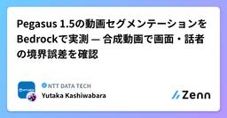
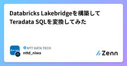
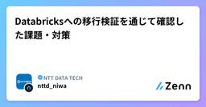

NTT DATA TECHのフィード
https://zenn.dev/p/nttdata_tech
NTT DATA公式アカウントです。 技術を愛するNTT DATAの技術者が、気軽に楽しく発信していきます。 当社のサービスなどについてのお問い合わせは、 お問い合わせフォーム https://nttdata.com/jp/ja/contact-us/ へお願いします。
フィード

Bedrock Managed Agentsを実測 — モデルはsession roleで制限でき、操作はdata eventに残る
NTT DATA TECHのフィード
1. はじめにマネージドなエージェント実行基盤を業務に入れる前には、「どのモデルを使わせるかを IAM で縛れるか」「誰が何をしたかを後から追えるか」を確認しておく必要があります。エージェントはモデル呼び出しとコマンド実行を自律的に繰り返すため、ここが曖昧なままだと、利用範囲の制御も監査も運用設計に落とせません。AWS（Amazon Web Services）は 2026/09/29 に、Amazon Bedrock Managed Agents（powered by OpenAI、以下 BMA）をPublic Previewとして発表しました。提供リージョンは US East ...
2日前

Pegasus 1.5の動画セグメンテーションをBedrockで実測 — 合成動画で画面・話者の境界誤差を確認
NTT DATA TECHのフィード
1. はじめに動画を検索や分析に使うには、「どこで何が起きたか」を開始・終了時刻つきのデータにする必要があります。従来の動画言語モデルでも、プロンプトでタイムスタンプを求めればそれらしい答えは返ります。ただ、その時刻がどれだけ正確なのかは、正解が分かっている動画で測らないと判断できません。TwelveLabs の Pegasus 1.5 は、Amazon Bedrock のモデルカード上の提供開始日が 2026/10/08（2026/10/13 確認）の動画理解モデルです。Pegasus 1.2 からの主な追加点は analysis_mode: "time_based_metad...
2日前

【PV連載 Vol.2】virshで始める仮想化入門 ～仮想マシンの作成・接続・削除を体験する～ 1
1
NTT DATA TECHのフィード
はじめにNTT DATAの加藤です。私たちは、仮想化基盤を管理・運用するサービス「Prossione Virtualization（以下、PV）」を開発しています。この記事は「Prossione Virtualizationを理解する・使ってみる」シリーズ Vol.2 です。前回の「【PV連載 Vol.1】仮想化とは？ハイパーバイザーとVM・コンテナの違い」では、仮想化の仕組みと、それを継続して運用する難しさを紹介しました。今回は実際に手を動かし、Linux上に仮想マシンを1台作ります。コマンドを打ちながら、仮想マシンに用いるイメージの準備から、仮想マシンの作成、接続、停止、...
3日前

Neo4jでLLMベースのナレッジグラフ構築を試してみた 1
NTT DATA TECHのフィード
はじめにこんにちは、データエンジニアをしているMaruです。近年、LLMを活用した検索では、文書の意味的な類似性だけでなく、情報同士の関係性をたどって回答の根拠を得るアプローチにも注目が集まっています。こうした関係性を明示的に扱う代表的な仕組みがナレッジグラフです。一方で、ナレッジグラフを一から人手で構築するには大きなコストがかかります。そこで、LLMを利用して文章からエンティティやリレーションを抽出し、ナレッジグラフを自動構築するアプローチがあります。本記事では、Neo4j GraphRAG for PythonのSimpleKGPipelineを利用し、スキーマを指定しな...
3日前

System One型のOSSモデルLayaを使ってテーブルデータの分類問題を解いてみた
NTT DATA TECHのフィード
この記事の対象者System One Model(本記事ではLaya)を用いたテーブルデータの分類問題に興味がある方Layaの実装に興味がある方 はじめに2026年9月にリリースされたJevと呼ばれるモデルが話題になっています。このモデルは通常の生成AIと異なり、文章を一切生成せず、高速な「判断」と確率・確信度のみを出力する、TypeSafe AIが開発した「System One Model」と呼ばれる新しいカテゴリのモデルです。System Oneとは、心理学者ダニエル・カーネマンの著書『ファスト＆スロー』で紹介されている、人間の素早く直感的な思考「システム1（速...
4日前

Databricks Lakebridgeを構築してTeradata SQLを変換してみた
NTT DATA TECHのフィード
Databricksへの移行を支援するツールを試してみた 1. はじめにNTTデータの丹羽です。Databricks Championとしても活動しています。近年、既存のデータウェアハウス（DWH）からDatabricksへのマイグレーションを検討する機会が増えています。Databricksでは、Teradataなどの既存DWHからDatabricksへの移行を支援するツールとして、Lakebridgeが提供されています。本記事では、Databricks CLIおよびLakebridgeをセットアップし、TeradataのソースコードをDatabricks向けに変換するま...
5日前

Databricksへの移行検証を通じて確認した課題・対策
NTT DATA TECHのフィード
TeradataからDatabricksへの移行検証で判明した課題・対策を紹介します。 1. はじめにNTTデータの丹羽です。Databricks Championとしても活動しています。Databricksが提供するマイグレーション支援ツール Lakebridge を利用し、TeradataからDatabricksへの移行を検証しました。本記事では、Lakebridgeの機能紹介ではなく、TeradataからDatabricksへの移行検証を通じて分かった効果・課題・適用範囲と、その対策について紹介します。!本記事は検証結果に基づくものであり、製品の性能・結果を保証す...
5日前

Strands BoxをEC2 Macで実測 — Dogwoodポリシーが効く経路を仕分け
NTT DATA TECHのフィード
1. はじめにAI コーディングエージェントを、操作ごとの承認なしで動かす運用が増えています。そうした運用で問題になるのは、「どこまで触れるか」だけではありません。「触れてよいものに対して何をしてよいか」も決めておく必要があります。コンテナや microVM はアクセス範囲に境界を引けます。一方で「機密ファイルを読んだあとは特定の宛先への送信を禁止する」「Slack への投稿は10分に3回まで」のような、過去の操作履歴に応じたルールは別の仕組みで持つ必要があります。2026/10/07 に、AWS（Amazon Web Services）が Strands Box を devel...
6日前

BedrockのOpenAIモデルでreasoning.summaryを実測 — トークン計上・応答速度・Guardrailsを検証
NTT DATA TECHのフィード
1. はじめに推論モデルをチャット UI や業務アプリに組み込むと、回答が出るまでの数秒をどう埋めるか、モデルがどのようなアプローチを取ったかをどう説明するかが課題になります。推論トークンは output トークンとして計上されますが、GPT-5.x / GPT-6.x などのクローズドウェイトのモデルでは、生の推論内容は API で公開されません。会話継続用には、暗号化された推論情報が返される場合があります。AWS（Amazon Web Services）は 2026/10/09（米国時間）に、Amazon Bedrock の Responses API で OpenAI モデ...
6日前

「業務管理」と「マスタデータ管理」は同じではない ― DAMA-DMBOKから考えるMDMの役割
NTT DATA TECHのフィード
はじめに企業の業務改革やシステム刷新についてお客様と会話していると、次のようなテーマで MDM（Master Data Management：マスタデータ管理） の導入が検討されるケースが多いように感じます。取引先管理業務の改革顧客管理業務の改革社員管理業務の改革製品管理業務の改革商品管理業務の改革原材料管理業務の改革いずれも「取引先」「顧客」「社員」「製品」「商品」「原材料」といった、企業にとって重要なデータを扱う業務です。そのため、顧客管理を高度化したいので、顧客MDMを導入するあるいは、商品管理業務を統合したいので、商品MDMを構築するとい...
8日前
Bedrock未経験からAWS認定「AIP-C01」に合格！勉強方法と学んでよかったこと
NTT DATA TECHのフィード
1. はじめに2026年9月に、AWS Certified Generative AI Developer - Professional（AIP-C01、以下AIP）を受験し、817点で合格しました！学習を始める前は、AWS Certified Solutions Architect - Professional（以下SAP）を取得していたものの、Amazon Bedrockを使った経験はありませんでした。この記事では、受験前の前提知識、実際に使った教材と勉強方法、そして学習を通して得られたことを紹介します。 2. 前提知識筆者の前提知識は、以下のとおりです。AWS認...
8日前
若手社員がGoogle Cloud Next Tokyo 26に参加してきたよ！（DAY 1）
NTT DATA TECHのフィード
NTTデータ2年目社員の湯川と、1年目社員の喜田(@kidatakeru)と齋藤(@maaya)です。クラウドインフラ領域に携わる若手エンジニア3名で、2026年7月30日・31日に東京ビッグサイトで開催された Google Cloud Next Tokyo 2026に参加しました。本記事では、参加したセッションや展示から、クラウドインフラやSREの業務とのつながりを感じた内容を紹介します。DAY 2のレポートでは、AIエージェントを支えるインフラ、実行基盤、データ、セキュリティについて紹介しています。https://zenn.dev/nttdata_tech/articles...
9日前
若手社員がGoogle Cloud Next Tokyo 26に参加してきたよ！（DAY 2）
NTT DATA TECHのフィード
NTTデータ3年目社員の栫と、1年目社員の喜田（@kidatakeru）、齋藤（@maaya）です。2026年7月30日・31日に東京ビッグサイトで開催されたGoogle Cloud Next Tokyo 26のDAY 2レポートです。DAY 2で特に印象に残ったのは、運用に関する話題の多さです。基調講演ではAIエージェントを動かし続けるための基盤が紹介され、各セッションでもデータベース移行に伴うチューニング、ハイブリッドクラウド運用、障害対応、オブザーバビリティなど、システムを継続的に運用するための工夫が語られていました。新機能そのものよりも、「作った後にどう運用するか」に焦点...
9日前
World Robot Conference 2026 現地レポート
NTT DATA TECHのフィード
World Robot Conference 2026 現地レポート本レポートでは、WRC2026で見えた技術トレンドと、中国ロボット産業の動向、そしてNTT DATAにとっての示唆について紹介したい。 中国が牽引する「Physical AI」の現在地と、その先に見えるロボット社会2026年8月19日から23日にかけて、中国・北京市で開催された「World Robot Conference 2026（WRC2026）」に参加した。300社超、2,000点超の展示が集まる本イベントは、世界最大級のロボット展示会として、現在のロボティクス業界の方向性を知るうえで非常に重要な場と...
9日前
Sigmaの紹介：業務部門が自分でデータ分析できるBIツール
NTT DATA TECHのフィード
Sigmaの紹介: 業務部門が自分でデータ分析できるBIツール 目次はじめにSigmaの機能まとめ特徴1 Excelに近い操作感でデータ分析できる特徴2 ドラッグアンドドロップでも可視化できる特徴3 Workbook上で分析からダッシュボード作成まで進められる特徴4 ダッシュボードだけでなくWebアプリのような画面も作成できる特徴5 Input TableとWritebackでSnowflakeへ書き戻せる導入検討時に見るべきポイント観点1 業務部門が自分で分析したい領域はどこか観点2 SnowflakeなどのクラウドDWHとの役割分担観点3 書き戻し...
9日前
SAP BDCナレッジ集：SAP Analytics Cloudの非対称レイアウトを試してみた
NTT DATA TECHのフィード
SAP Analytics Cloudの非対称レイアウトを試してみた はじめにSAP Analytics Cloud（SAC）では、2026 Q2のアップデートでテーブルの非対称レイアウト（Asymmetric Reporting） が利用できるようになりました。Asymmetric Reporting Layout月次レポートでは、「4月までは実績、5月以降は予測」のように、実績と予測を1つの表で連続して見せたいケースがよくあります。従来のテーブルでは、ActualとForecastを並べても、その内側に配置した月ディメンションは共通です。そのため、実績が4月までしかな...
10日前
Kong API + AI Summit '26 参加レポート 〜AI Connectivity Platformへ広がるKongの世界〜
NTT DATA TECHのフィード
1. はじめにこんにちは。NTTデータでKong製品の導入・活用支援を担当している伊藤です。NTTデータは2024年よりKongのパートナーとして活動しています。この度、2026年9月30日〜10月1日にロサンゼルスで開催された「Kong API + AI Summit 2026」に参加してきました。本記事では、「KongがAIエージェント時代にどのようなプラットフォームを目指しているのか」 という全体像と、特に印象に残った発表をピックアップして紹介します。図1-1. Karlがお出迎え図1-2. 会場 2. KongとはKongは、API Gatewayを中心...
10日前
Kong KonnectのObservability機能でLLM利用料を可視化してみた
NTT DATA TECHのフィード
1. はじめにLLMをアプリケーションから利用する機会が増えるにつれて、APIの呼び出し回数だけではなく、どのアプリケーションがどれくらいLLMを利用しているのか、また利用料がどの程度発生しているのかを把握することが重要になってきています。特にチームでLLM APIを共通利用する場合や、複数のアプリケーションからLLMを呼び出す場合、利用状況を可視化することで、チーム別・アプリケーション別の利用傾向を把握しやすくなり、コスト管理にも役立ちます。今回は、Kong KonnectのAI Gateway機能を使ってOpenAI APIへのリクエストを中継し、その利用状況をKonnec...
13日前
Microsoft Agent Framework Workshop で、Multi-Agent Workflow に取り組んでみた
NTT DATA TECHのフィード
1. はじめに最近、AIエージェントの文脈で、A2A、マルチエージェントといったキーワードを見かける機会が増えてきました。ただ、これらの概念は記事を読むだけでは少し抽象的で、実際に動かしてみないとイメージしづらい部分があります。そこで今回は、マルチエージェントやエージェントワークフローの考え方を理解するために、 Microsoft Agent Framework を試してみました。題材として、Azure Samples で公開されている Agent Framework Workshop に取り組みました。https://github.com/Azure-Samples/ag...
13日前
Dataiku初心者が公式Learning Pathを一通り学んでみた ― 認定資格5つの学習ロードマップと到達点
NTT DATA TECHのフィード
1. はじめにはじめまして、NTTデータの菊地です。普段はデータ分析やデータ活用に関する業務に携わっています。Dataikuについては、業務をきっかけにほぼ初心者の状態から学習を始めました。Dataikuに興味を持ったものの、「そもそも何ができるの？」「何から学習すればいい？」「どこまで学べば、ある程度使えるようになる？」と迷う方も多いのではないでしょうか。私自身も同じ状態からスタートし、公式Learning Pathを中心に学習して、以下の認定資格を取得しました。・Core Designer・ML Practitioner・Advanced Designer...
16日前